Full Playthrough
Level Overview
Overview
Bootlegger Bust is a first-person shooter level set inside a Prohibition-era warehouse doubling as a mafia hub. The level was designed to support the time period through environmental layout and visual storytelling, guiding the player through a series of escalating combat encounters across distinct, clearly defined spaces.
Level Goals
- Design a warehouse that reflected a Prohibition-era industrial setting while remaining readable and navigable for gameplay
- Organize distinct areas to help players understand space, progression, and purpose at a glance
- Support gameplay by ensuring room sizes, sightlines, and encounter pacing supported natural player flow
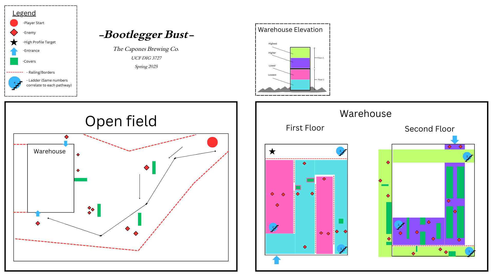
Initial level layout concept — room structure and flow mapped before blockout
Full warehouse blockout — all floors and rooms laid out before set dressing
Beat Breakdown
Beat 01
Starting Garage
- Goal: Introduce the level and player objective through a focused garage space that establishes tone and intent
- Design Action 1: Used minimal, moody lighting and a compact layout to guide player attention toward objectives and on-screen UI
- Design Action 2: Designed the garage as a tight but purposeful space that sets expectations for the more complex areas ahead
Playthrough — Starting Garage
Beat 02
City Streets
- Goal: Establish context and immersion with the city street outside the warehouse before combat begins
- Design Action 1: Used framing techniques — surrounding architecture and props — to naturally draw the player's eye toward the warehouse entrance
- Design Action 2: Designed the street layout so that exiting the car places the warehouse entrance directly in the player's sightline, removing any navigation ambiguity
Playthrough — City Streets
Beat 03
Warehouse Entrance
- Goal: Introduce the first combat encounter in an industrial space that feels authentic and readable
- Design Action 1: Provided multiple cover points and clear sightlines to support combat without forcing the player into a single approach
- Design Action 2: Used period-accurate props and set dressing to reinforce the Prohibition-era industrial setting without obstructing navigation
Playthrough — Warehouse Entrance
Beat 04
The Speakeasy
- Goal: Expand the combat space while establishing a distinct atmosphere that communicates the mafia hub identity
- Design Action 1: Used warm amber lighting and vintage props to create an immersive Prohibition-era hideout feel distinct from the industrial entrance
- Design Action 2: Incorporated set dressing as both atmosphere and spatial structure — furniture and fixtures naturally guide movement while reinforcing the setting
Playthrough — The Speakeasy
Beat 05
The Office
- Goal: Create a focused mini-boss encounter that contrasts the larger combat spaces and heightens tension before the final stretch
- Design Action 1: Used red lighting and dramatic props to reinforce a confrontational tone and signal that this encounter is distinct from prior rooms
- Design Action 2: Connected the office to a back storage corridor — giving the player a reset moment before the final escalation
Playthrough — The Office
Beat 06
Storage Room
- Goal: Shift pacing with a tighter, darker, more linear space that creates tension and anticipation before the final encounter
- Design Action 1: Used minimal lighting and dense shelving to narrow the player's sightlines and build dread through constriction
- Design Action 2: Applied breadcrumbing through targeted light sources to guide movement without explicit signposting
Playthrough — Storage Room
Beat 07
Final Boss
- Goal: Deliver the climactic final showdown in a space that feels earned — visually distinct and mechanically purposeful
- Design Action 1: Added a boss health bar to make this encounter feel unique and give the player clear, readable combat feedback
- Design Action 2: Implemented a key drop mechanic that unlocks the door out of the room — directly tying the encounter outcome to level progression
Playthrough — Final Boss
Design Challenges
Challenge 01
Unclear Critical Path
- Design Goal: Create a warehouse layout where the critical path is always readable — players should always know where to go next without backtracking or confusion
- Flaw 1: Early layouts used ladders and ambiguous doors to connect rooms — players had no clear indication of where to go next and frequently got lost
- Flaw 2: Much of the level's runtime was spent traversing between sparsely populated rooms, making the critical path feel tedious rather than engaging
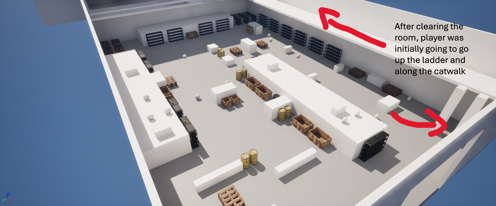
Blockout 1 — ambiguous entry point, no clear path forward from the warehouse entrance
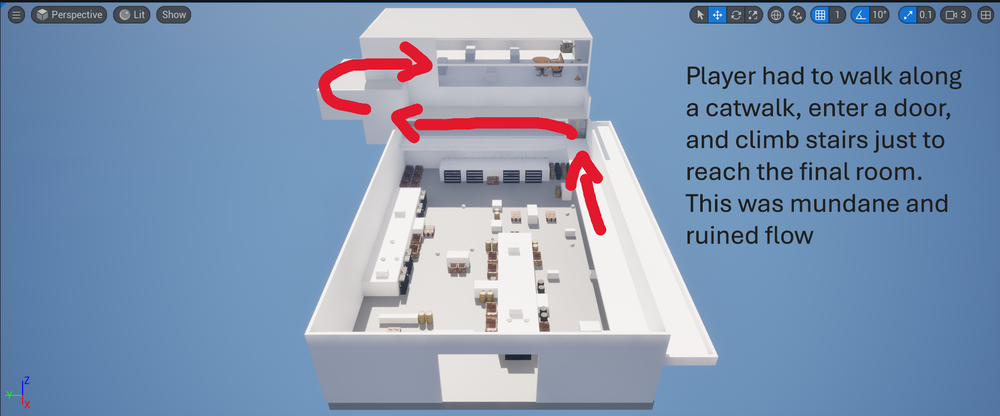
Blockout 2 — level too short with traversal-heavy gaps between combat beats
- Solution 1: Removed ladders and unclear doors entirely — redesigned the layout around a more linear path using stairs as the primary vertical connection, giving players an immediately readable direction forward
- Solution 2: Replaced sparse traversal rooms with the mafia speakeasy — a fully set-dressed combat space that gave the critical path purpose and visual interest at every step
Both changes addressed the same root problem — the space wasn't communicating direction. Stairs read as forward progress in a way ladders never could, and replacing dead space with a meaningful room kept the player engaged rather than confused

Mafia speakeasy replaces the ambiguous traversal room — stairs immediately visible as the path forward
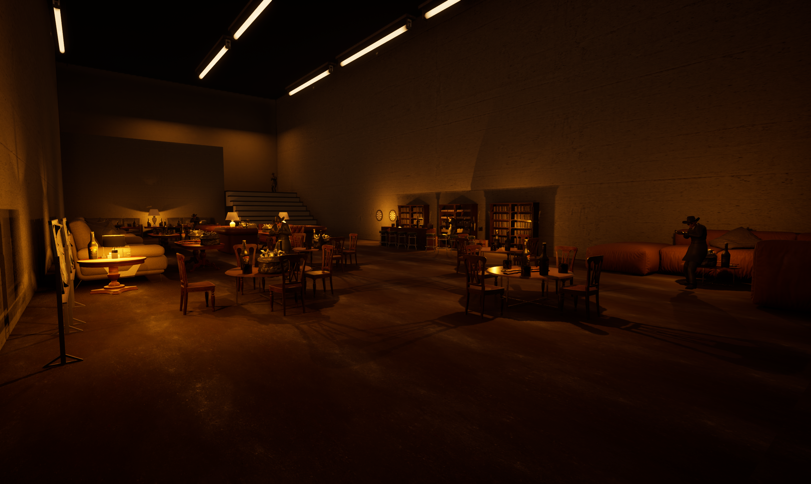
Final speakeasy — a distinct, purposeful space that rewards exploration and guides progression
Challenge 02
Little Gameplay Variance
- Design Goal: Create a level with clearly differentiated beats — each space should feel tonally and mechanically distinct, giving the player a sense of escalation and variety across the experience
- Flaw 1: Every combat room in the original layout was tonally identical — same lighting, same spatial feel, same enemy density — leaving no sense of progression or change in atmosphere
- Flaw 2: Without varied pacing beats there was no emotional arc — the level felt flat from start to finish with no moment of relief, tension, or climax to differentiate the experience
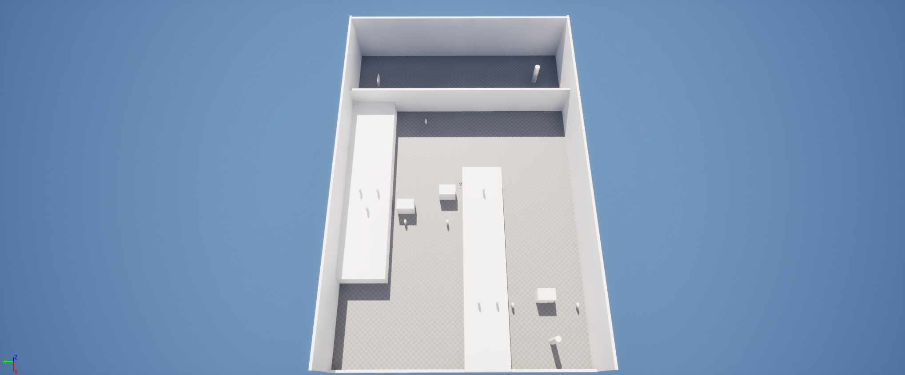
Blockout 1 — all rooms read the same with no tonal variation or spatial identity
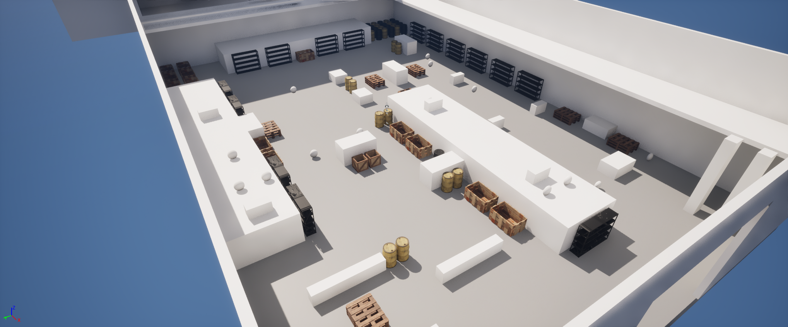
Blockout 2 — cover placement only, no atmospheric differentiation between spaces
- Solution 1: Designed each space with a distinct visual identity — warm amber in the speakeasy, red in the office, near-dark in the storage corridor — so every room communicates its own tone at a glance
- Solution 2: Structured the level as alternating combat and low-pressure beats — garage, street, warehouse, speakeasy, office, storage, boss — creating a rhythm that keeps the player engaged and builds toward a clear climax
Giving each space a distinct identity and varying the pacing between beats transformed the level from a series of identical rooms into a journey with a real arc — the player could feel the shift in tone as they progressed
Speakeasy — warm amber lighting and vintage props establish a distinct identity from the industrial entrance
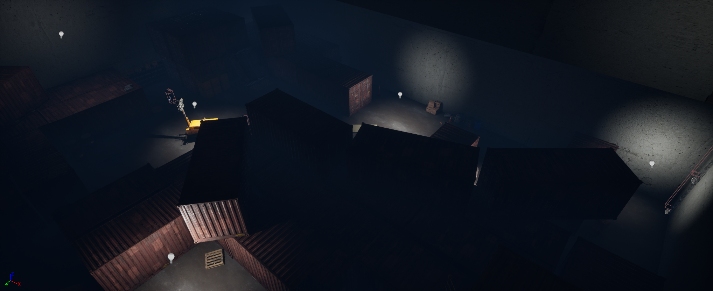
Storage corridor — near-dark pacing shift contrasts the speakeasy and builds tension before the final boss
Challenge 03
Level Too Short
- Design Goal: Deliver at least 5–8 minutes of engaging gameplay — enough time to establish setting, build tension, and deliver a satisfying climax
- Flaw 1: The original level was only three brief combat rooms — the entire experience lasted under two minutes with no setup or payoff
- Flaw 2: The player was dropped directly into combat with zero contextual buildup — no sense of where they were, why they were there, or what they were working toward
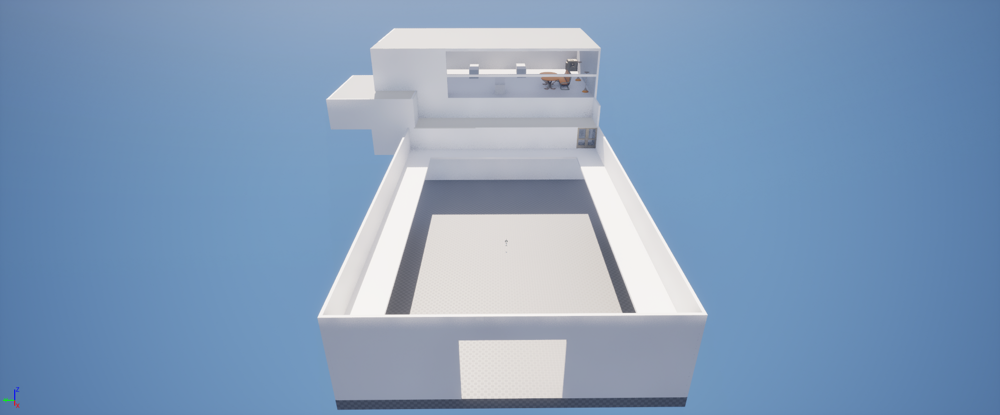
Blockout 1 — original two-floor layout: three rooms, no context, no climax
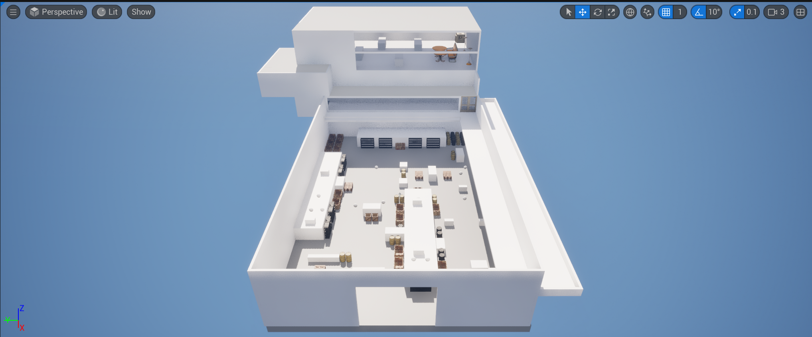
Blockout 2 — full whitebox overview showing how sparse the original level was
- Solution 1: Added a starting garage and city street section at the front — slower, context-setting beats that establish the player's role and location before any combat begins
- Solution 2: Added a back storage corridor and a fully set-dressed final boss room at the end — extending the level's back half and giving it a proper climactic endpoint that the original three-room layout completely lacked
Expanding both ends of the level brought it to a proper length while also solving the buildup and payoff problem. The front half now earns the combat and the back half rewards it — the level finally had a beginning, middle, and end
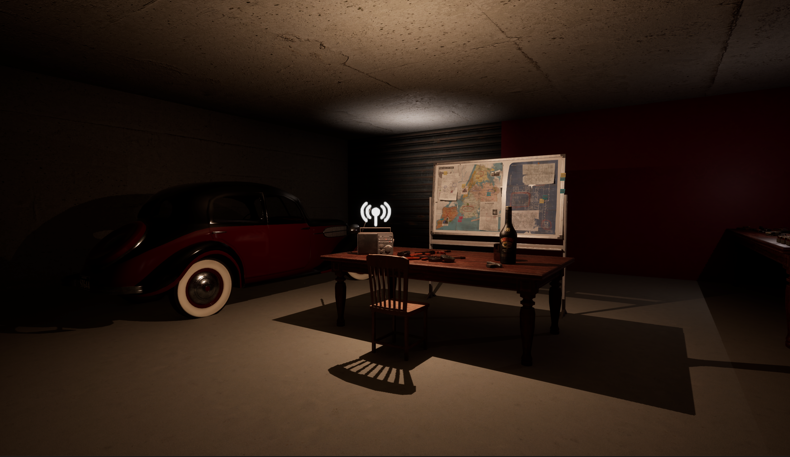
Starting garage — mission context established before the player reaches combat

City streets — frames the warehouse entrance and builds atmosphere before the first encounter
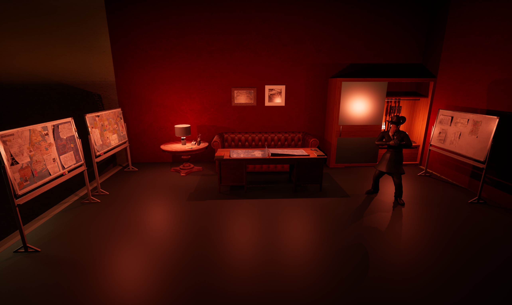
Mini-boss encounter — added to create a mid-level climax and guide player forward

Final boss room — extravagant climax that earns the level's full escalation arc
Process & References
Before blockout work began, reference gathering helped define the visual and spatial language of the level.
- Referenced Prohibition-era photographs and similar game levels to understand how to convey setting, flow, and combat spaces effectively
- Collected images of warehouses, streets, props, lighting setups, and cinematic reference to inform the visual identity of each room
- Mapped out room layouts, points of interest, and encounter flow to plan the overall player journey before starting blockout work
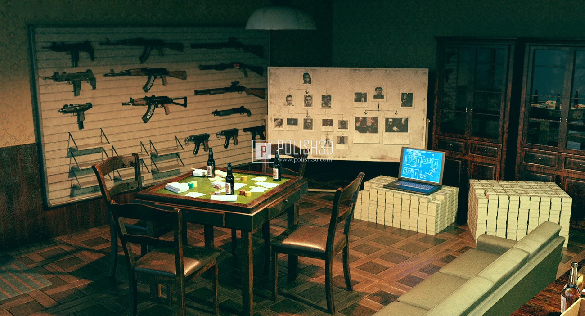
Mafia room reference — visual tone and prop language for the speakeasy and boss room
Initial level layout map — room structure, flow, and points of interest planned before blockout
Conclusion & Learnings
Designing Bootlegger Bust provided a focused opportunity to refine level flow, player guidance, and gameplay pacing within a visually cohesive Prohibition-era setting. Working within a tight 6-week window pushed rapid iteration and deliberate prioritization of what mattered most to the player experience.
Knowledge Gained
- Learned how to structure spaces and visual cues to naturally guide players through complex, multi-room layouts
- Gained insight into differentiating combat and exploration beats to maintain engagement and build tension
- Developed skills in framing key objectives and designing spaces that clearly communicate player intent without explicit signposting
Areas for Growth
- Improve early-stage layout planning to better anticipate pacing and player flow before blockout begins
- Refine environmental storytelling to reduce reliance on explicit narrative cues
- Experiment with more dynamic encounter design to create greater variety within combat spaces